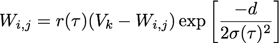

4. SELF ORGANIZING MAPS
A fundamental problem in clustering tags from Flickr photostreams is that when
considered as an affinity matrix, each of the N tags is represented by an
N-dimensional feature vector. Most clustering algorithms fail in this case as
the dimensionality of the problem is too high. Therefore, Clustrr first reduces
the dimensionality of the problem using a type of neural network called a
self-organizing map (SOM),
also known as a Kohonen map (other approaches to
reducing the dimensionality of the affinity matrix worth exploring might
include: the
isomap algorithm,
Sammon's mapping, or
autoencoding neural networks).
In brief, the SOM used in Clustrr is a 15x15 grid of "neurons", each of which
are represented by a vector
Wi,j with the same dimensionality as the feature
vectors composing the affinity matrix of the tag co-ocurrence graph. The SOM is
trained by repeatedly exposing it to a set of training vectors
V, in this case
rows of the affinity matrix. When a training input
Vk is seen by the neural
network, the "winning" neuron is said to be that neuron whose weight vector has
the minimum Euclidean distance to the training vector. All the neuron weights
W are updated after each exposure according to the equation:

where
d is the distance on the grid between the "winning" neuron for the input
vector and neuron
i,
r(t) is the "learning rate", and
σ(τ) is a
neighborhood size parameter. For the training of the neural network to converge,
the value of both
r(τ) and
σ(τ) must decrease as training progresses
and the training epoch
τ increases. By updating not just the winning neuron
to replicate an input vector but also its neighbors, similar vectors become
grouped in the SOM and the high-dimensional topology of the input set is
retained in the two-dimensional projection of the map. Figure 3 shows a
cartoon representation of a SOM with winning neuron and surrounding neighbors
illuminated according to the strength of their learning.
Because each grid site in the SOM has the same dimensionality as the input
vectors, it is common to visualize the SOM through its associated U-matrix [14].
The value of the U-matrix at any position in the SOM grid is a function of the
distance between the weight vector
Wi at that site and the weight vectors of
its nearest neighbors. In Clustrr, the value of the U-matrix is given by the
sum of the euclidean distances between the vector on a site and the vectors of its nearest neighbors. Presented with
a reverse colormap, this means that white (black) portions the of U-matrix
represent regions of high (low) similarity between SOM weight vectors. In this
way, naturally occurring tag cluster may be identified visually.
To illustrate the topology preservation of the SOM and the SOM's representation
as a U-matrix, we show in Figure 4 a SOM trained on test data with a known,
highly clustered structure (left) and its associated U-matrix (right). In this
case, we generated a set of vectors clustered around eight anchor points equally
distributed in hue around a colorwheel with fixed saturation and lightness.
Vectors in each cluster were generated by small random displacements along
RGB components. Because the data in each vector represents color information, we
can show this direct representation of the SOM and easily identify the eight
hues. In the U-matrix, we identify eight white regions of highly similar SOM
prototype vectors, as well as the dark transition regions between them.